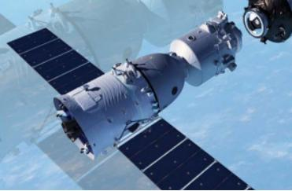

神舟十号于2013年6月11日17时38分，在酒泉卫星发射中心由长征二号F遥十火箭发射。神十任务实现了中国载人航天飞行任务的连战连捷，为工程第二步第一阶段任务划上了圆满的句号，也为后续载人航天空间站的建设奠定了良好的基础。
神舟十号飞船与神舟九号飞船技术状态基本一致，为进一步提高安全性与可靠性，进行了部分技术状态更改。飞船全长9米，舱段最大直径2.8米。
飞行乘组由3名航天员组成，其中1名为女航天员,分别是聂海胜、张晓光、王亚平;飞船在轨飞行10余天，计划安排飞船与天宫一号进行两次交会对接，第一次为自动交会对接，第二次由航天员手动控制完成。飞船返回舱主着陆场位于内蒙古中部地区草原。
